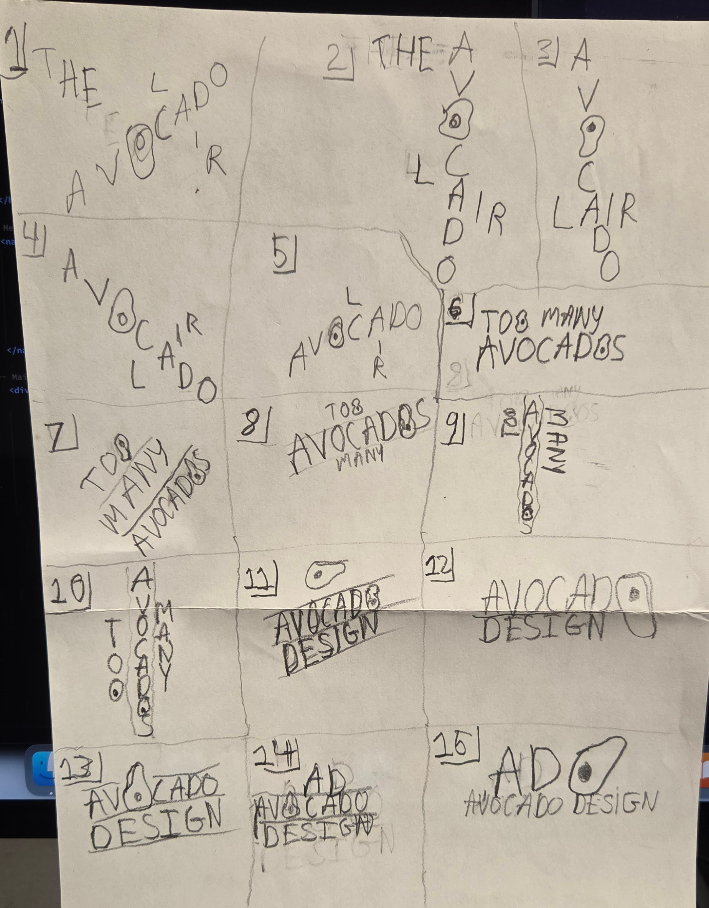
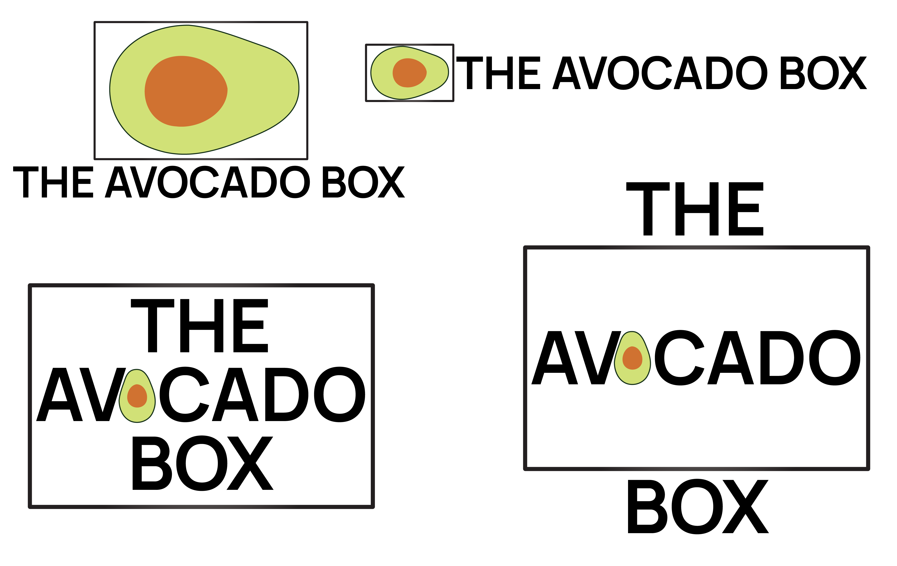

Avocado Box Logo process
Initial Sketches
1-5. So, for these designs I thought of The Avocado Lair, this name just randomly came up in my mind, I tried to do sort of a crossword style logo for these. Sometimes I would even omit the "the" from the wordmark.
6-8. Too Many Avocados, Yep, not much to say other than I usually stacked the 3 words on top of each other, sometimes with a line separating them.
9-10. Too Many Avocados as well, however this time I did a sort of "Diner" styled wordmark with the word "Avocados" being written vertically.
11-15. Avocado Design, I tried to incorporate the symbol itself which is the Avocado in this case. I'm quite satisfied with 11 and 13 and I might end up choosing one of these to do the digital roughs.
So how did I end up with 'The Avocado Box'? I was once at home checking the fridge for a snack when I saw various avocados in a box, and it went downhill from there.
Digital Roughs Process
After finally settling on Avocado Box it was time for the Digital Sketches, I was told to do 5 but I only managed to do 4. I eventually settled for the design on the top right to be on the banner of the website as you can see. I would also u8se the top left logo in my logo animation.